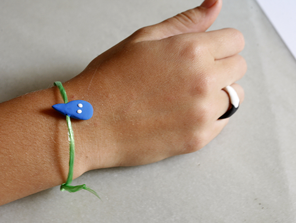

La plastelina que se seca al aire y se hincha, deja tantas posibilidades, que vamos a subir varios ideas y empezamos con joyas! Una gotita o un anillo.


La plastelina que se seca al aire y se hincha, deja tantas posibilidades, que vamos a subir varios ideas y empezamos con joyas! Una gotita o un anillo.


Con la plastelina que se seca al aire y se hincha se pueden dar ojos a fruta o verdura. Una buena idea para animar los niños…
Leer más →

Para todos los fans de Harry Potter. En una tienda de perlas hemos comprado Medallones, donde puedes pegar tu propio imagen! Después que a Hannah se…
Leer más →
Una buena técnica para dibujar es con tinta, ahí los niños pueden probar las plumas para pintar, pluma de bamboo o cortar punta a una pluma…
Leer más →